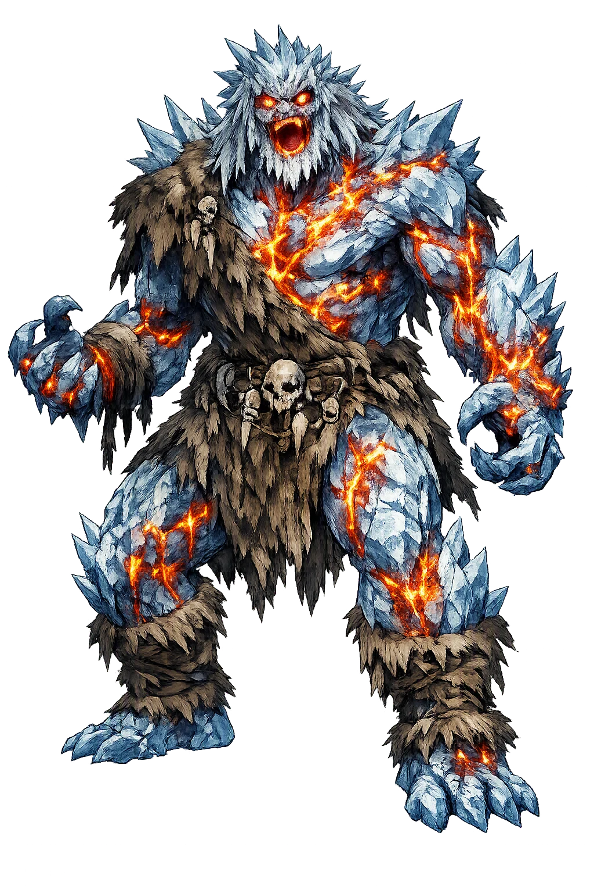
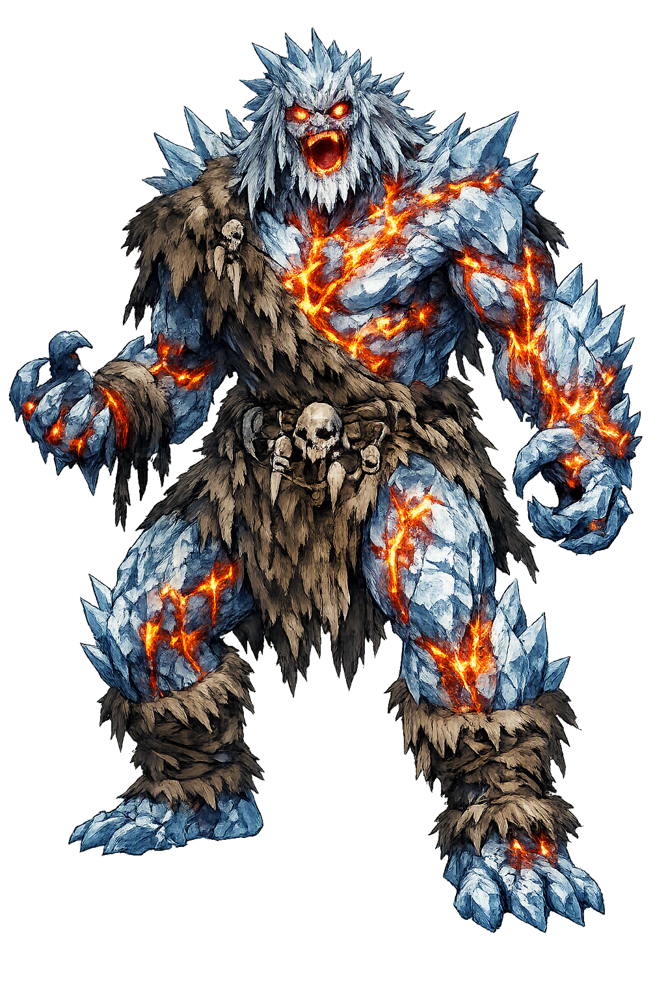

Unicode restoration and ASCII comparison
ᚢᛘᛁᚱ
The name in its original Norse form. Ymir (ᚢᛘᛁᚱ) is attested in the source tradition — “Twin, screamer (from *ymijaz)”. Its original diacritics and script distinctions carry the full phonetic and orthographic weight of the source tradition.
ymir
The plain ymir form is identical to the Unicode restoration. Because this name is already written in Latin letters, no diacritics, stress, or script information were lost — only capitalization differs.
Ymir
The Unicode restoration does not need to recover lost marks for Ymir. Its value is canonical spelling and consistent cataloguing, not the reconstruction of erased orthography. The domain is readable as-is to both DNS and humanity.
Ymir.com → ymir.com
The non-ASCII characters in Ymir are encoded while the ASCII remains visible. To the DNS, it is Punycode. To humanity, it is Ymir.
How Ymir travels from ancient script to the modern URL
Owned, ideal, and ASCII forms of Ymir
Ymir
Restores ᚢᛘᛁᚱ. The full Unicode restoration. ymir.com is not in the PuniCodex collection — it is watched for release; if it drops, this temple upgrades to an owned flagship.
How Ymir was spoken
The First Being and the Matter of the World
Ymir is the first living thing in the Norse cosmos — the frost-giant who condensed out of the dripping rime where the heat of Múspell met the ice of Niflheimr in the yawning void of Ginnungagap. He is the ancestor of every jotunn, the cow Auðhumla's nursling, and finally the raw material of creation itself: Óðinn, Vili, and Vé kill him, and from his body build the world — flesh to earth, blood to sea, bones to mountains, skull to sky.
The yawning void before creation — the charged emptiness between the ice-world of Niflheimr and the fire-world of Múspell where Ymir first took shape.
The primeval cow whose four rivers of milk fed Ymir, and who licked the salty rime-stones until Búri, grandfather of the gods, emerged from the ice.
Slain by Óðinn, Vili, and Vé, Ymir becomes the world: flesh earth, blood sea, bones mountains, hair trees, skull sky, brains the clouds.
So much blood poured from Ymir's wound that the whole race of frost-giants drowned — all but Bergelmir and his wife, who rode out the deluge on their lúðr.
Stories of Ymir
Ymir has no adventures and no cult: his mythology is cosmogony entire. He exists to be first — first life, first giant, first death — and the corpus treats him less as a character than as a fact of physics: the being out of whom everything had to be made, because before him there was nothing to make it from.
Before the world there was Ginnungagap, the yawning void, with the frozen rivers of Niflheimr to the north and the sparks of Múspell to the south. Where the heat met the rime, Snorri says, the hoar-frost melted and dripped, and the drops quickened into the shape of a man: Ymir, whom the frost-giants call Aurgelmir. Vafþrúðnismál gives the older verse version — from Élivágar's waves shot poison-drops that froze and grew, until a jotunn arose from them.
He was no god and no friend to gods: Snorri calls him and all his line evil. Yet everything that follows in the cosmos presupposes him — the first living being is the first material, and creation in the Norse telling is not ex nihilo but a reworking of what already is.
Asked how Ymir got children when he knew no giantess, Vafþrúðnir answers with the strangest genealogy in the corpus: from under the primeval giant's arm grew a man and a woman together, and one of his legs begot a six-headed son on the other. The jotnar multiply from the giant's own body — parthenogenesis in sweat and limb.
This is why Ymir is the ancestor of all giants: not through a wife but through himself. Hyndluljóð states the doctrine flatly — all the giants descend from Ymir. The jotnar are not a rival tribe to the gods; they are the older generation of the same world-substance.
Ymir did not starve. From the same dripping rime came the cow Auðhumla, and four rivers of milk ran from her udder to feed him. She herself licked the salty rime-stones, and as she licked, a man's shape emerged from the ice — hair the first day, head the second, the whole man the third: Búri, strong and fair, who begot Borr, and Borr married Bestla the giant's daughter, and their sons were Óðinn, Vili, and Vé.
The detail is the myth's quiet hinge: gods and giants rise from the same frost within days of one another, and the gods' grandmother is herself a giantess. Snorri's genealogy makes the coming killing not a war on strangers but the oldest kind of violence — the young order turning on the body of the old.
Óðinn, Vili, and Vé kill Ymir, and from his body they make the world. Grímnismál gives the catalogue in verse: from Ymir's flesh the earth was shaped, from his blood the sea, from his bones the mountains, from his hair the trees, and from his skull the sky; from his eyelashes the gods made Miðgarðr as a defence against the giants, and from his brains the heavy, wind-driven clouds. Snorri adds the maggots in the flesh, made rational by the gods' decree as the dwarfs, and the four dwarfs — Norðri, Suðri, Austri, Vestri — set to hold up the skull-vault of heaven at its corners.
So much blood ran from the wound that it became a deluge, and the whole race of frost-giants drowned in it — all but one. Bergelmir, Ymir's heir in the verse line, rode out the flood with his wife on his lúðr, and from them the jotnar were born again. Creation's first act is a killing, and its first catastrophe follows immediately: the world is made, and nearly unmade of giants, in a single stroke.
The völva of Völuspá opens her memory with him: 'It was in early days, when Ymir dwelled; there was no sand nor sea nor cool waves, no earth existed, nor heaven above, a yawning void there was, and grass nowhere.' The giant is the poem's first named being — the datum from which the seeress's whole vision of time unfolds.
Then Burr's sons lift up the earth, and the ordering begins. Völuspá never stages the killing; it simply places Ymir on the far side of a before and an after. That placement is his function everywhere in the corpus: he is the name Norse tradition gives to the raw, unworked world — and the proof that even the raw world had a body.
Every cosmogony answers the question of what the world is made from; the Norse answer is a body. Before there was matter there was already a being — and so creation is never innocent. The ground is flesh, the weather is a giant's breath, the mountains are bones that once walked. The myth refuses the comfort of an empty beginning: someone had to die for there to be anywhere at all. Yet the Edda does not linger on the killing's guilt; it lingers on the fitting. Flesh to earth, blood to sea, skull to sky — the world is a translation, part for part, of the first body into the lasting one. To live in Miðgarðr, in this telling, is to live inside Ymir: behind a wall of his eyelashes, under a vault of his skull, walking his flesh. The old name for that intimacy is one the modern world is relearning — that the environment is not around us but is what we are made of.
Enter Extended Lore